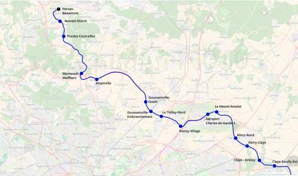
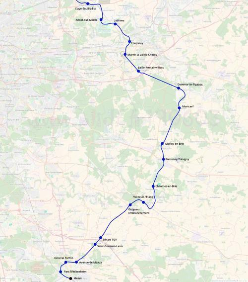

Tangentielle Seine-et-Marne
Tangentielle Seine-et-Marne
Persan-Beaumont - Melun
Une nouvelle tangentielle pour le réseau Île-de-France
La tangentielle Seine-et-Marne serait un nouvel axe de transports pour se déplacer en grande banlieue à l'est de l'Île-de-France sans passer par Paris. Elle relierait Persan-Beaumont à l'aéroport de Roissy, Mitry-Mory, Claye-Souilly, Chessy-TGV, Verneuil-l'Étang et Melun.
Cette tangentielle comporte beaucoup de lignes nouvelles ou réouvertes. Partant de Melun, elle ferait le tour de l'agglomération melunaise par l'ouest sur un tracé partagé avec le tram-train de Melun. Le tracé longerait ensuite la nationale 36 jusqu'à Verneuil-l'Étang, gare de correspondance. Puis sur l'itinéraire de l'ancienne ligne de de Verneuil à Marles-en-Brie et la ligne de Gretz à Sézanne ou il atteint Mortcerf et le triangle de Dammartin.
En reprenant l'infrastruture partagée avec le RER G on atteindrait Chessy-TGV puis on remonterait vers le nord en direction du pôle de Claye-Souilly via la base de loisirs de Jablines. De Claye-Souilly la ligne continuerait vers le Nord en direction Compans et de la gare aéroport Charles-de-Gaulle 3. Ensuite le tracé longerait la Francilienne pour atteindre Montsoult - Maffliers et continurait sur la ligne d'Épinay au Tréport vers la vallée de l'Oise et Persan-Beaumont, le terminus.
En connectant Melun à Chessy et à l'aéroport de Roissy, elle répondrait à un besoin de transports pour les habitants de la Seine-et-Marne.
Cartes
{kind=link}

Cliquer pour agrandir
{kind=link}

Cliquer pour agrandir
Stations
Si ce projet vous intéresse n'hésitez pas à le (re-)partagez sur les réseaux sociaux ou par courriel ou à en parler autour de vous.
Si vous souhaitez travailler à la concrétisation de ce projet, passez à l'action et contactez nous.
Commenter